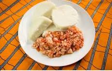

Recipe for cooking yam

Description
A yam recipe is a delightful and versatile dish that highlights the natural sweetness and creamy texture of yams. Whether roasted, boiled, or mashed, yams are the perfect base for savory or sweet creations. This recipe pairs tender, cooked yams with a blend of aromatic spices, herbs, or a touch of butter and honey for a flavorful and satisfying dish. Ideal as a comforting side for any meal or as the star of a vegetarian entrée, yam dishes are rich in nutrients and easy to prepare, making them a favorite in kitchens around the world.
Ingredients
- 4 medium yams
- 2 tablespoons olive oil or melted butter
- 1 teaspoon ground cinnamon (optional, for sweet recipes)
- 1/2 teaspoon ground nutmeg (optional, for sweet recipes)
- 1 teaspoon smoked paprika (optional, for savory recipes)
- 1/2 teaspoon garlic powder (optional, for savory recipes)
- Salt and black pepper to taste
- 2 tablespoons honey or maple syrup (optional, for sweet recipes)
Steps
- Prepare the Yams
Preheat the oven to 400°F (200°C). Wash and peel the yams, then cut them into bite-sized cubes or rounds, depending on your preference.
- Season the Yams
In a large bowl, toss the yam pieces with olive oil or melted butter. For a sweet dish, add cinnamon, nutmeg, and honey or maple syrup. For a savory dish, use smoked paprika, garlic powder, salt, and black pepper. Mix well to coat evenly.
- Roast the Yams
Spread the seasoned yams in a single layer on a baking sheet. Roast for 25-30 minutes, flipping halfway through, until the yams are golden brown and tender when pierced with a fork.
- Garnish and Serve
Remove the yams from the oven and garnish with fresh herbs like parsley or thyme, if desired. Serve hot as a side dish or main course and enjoy!
Back to home